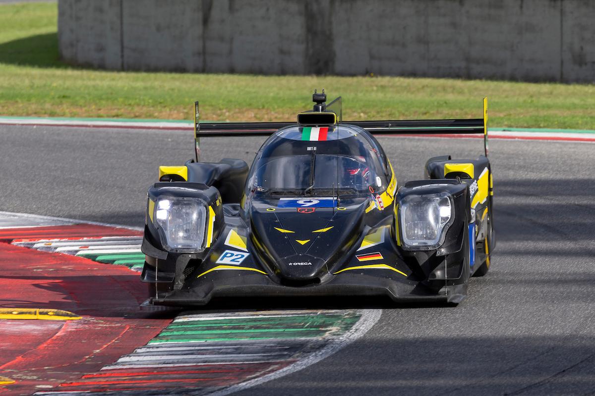

Iron Lynx – Oreca 07-Gibson
Iron Lynx – Oreca 07-Gibson
510 CV
950 kg
Motor central
Tracción trasera
Coche muy equilibrado gracias a su reparto de peso del 50%-50%, con un buen setup puede ser de los mas comppetitivos, tiende a subvirar en curva lenta debido al peso delantero y a su motor delantero